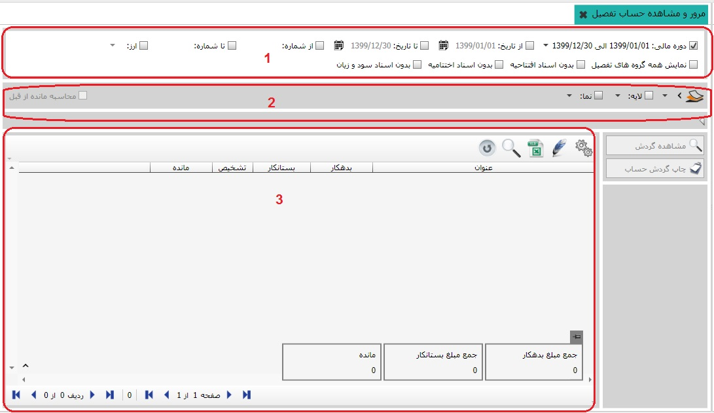
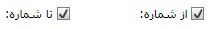

این بخش به شما امکان گزارش گیری از گردش حسابها با فیلتر های مختلف را می دهد در سر برگ این بخش می توانید فیلتر هایی نظیر تعیین دوره ی مالی و بازه ی زمانی ایجاد کنید، در ادامه گزارش های مفیدی با فیلتر های لایه ی حساب و نمای حساب نیز به شما کمک میکند نگاهی اجمالی بر گردش حساب ها در سطح تفصیل داشته باشید. برای مشاهده ی گزارش ابتدا به ترتیب کادر شماره ی یک و دو را تکمیل کنید تا در کادر شماره ی سه گزارش مورد نظر خود را مشاهده کنید، باید توجه داشته باشید که سیستم فقط حسابهایی که دارای گردش هستند را نمایش می دهد در ادامه به توضیح جزییات این بخش خواهیم پرداخت. با کلیک بر روی منوی مرور و مشاهده ی حساب تفصیل تصویر زیر نمایان می شود :
در تصویر بالا سه کادر مشاهده می کنید که در زیر به شرح هر یک می پردازیم :
کادر شماره 1:

اگر دوره های مالی مختلفی داشته باشید از این قسمت می توانید دوره مالی مورد نظر خود را تعیین کنید، هنگامی که دوره ی مالی را تعیین می کنید سیستم فقط گردش های موجود در دوره ی مالی تعیین شده را نمایش می دهد.

در این قسمت می توانید بازه ی زمانی مورد نظر خود را تعیین کنید در صورت استفاده از این گزینه سیستم تنها گردش های موجود در بازه ی زمانی تعیین شده را نمایش می دهد.
با استفاده از این گزینه می توانید شماره ی اسناد را فیلتر کنید و فقط اسنادی که شماره ی آنها فیلتر شده را ببینید.

در صورت اعمال این گزینه سیستم سند های افتتاحیه را در گردش ها نمایش نمی دهد.

در صورت اعمال این گزینه سیستم سند های اختتامیه را در گردش ها نمایش نمی دهد.

اگر این گزینه را اعمال کنید سیستم سند های سود و زیان را در گردش ها نمایش نمی دهد.
کادر شماره 2:در این کادر می توانید گروه تفصیل، لایه ی حساب و نمای مورد نظر خود را تعیین کنید و پس از تعیین در کادر شماره ی سه گزارش مربوطه را مشاهده نمایید.